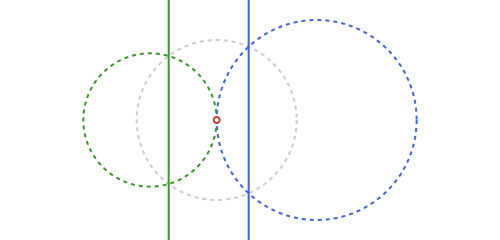
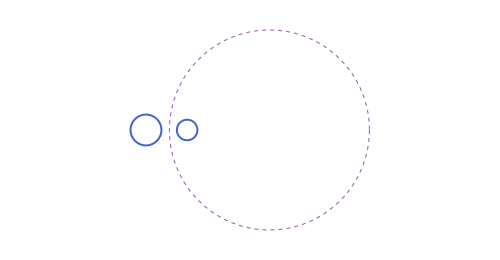
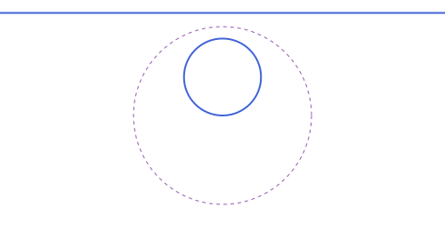
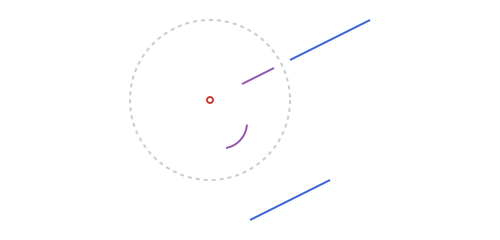
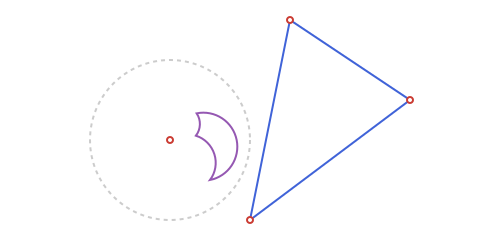
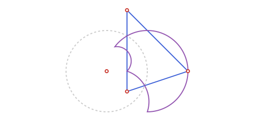
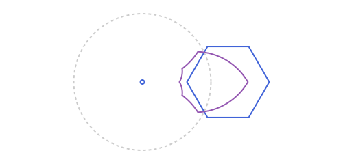
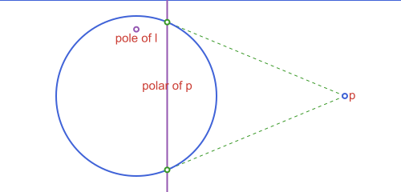

Circles: Inversion
The circles and points from Circles: Basics:
using Apollonius
c = APCircle2(APPoint(0.0, 0.0), 5.0)
p = APPoint(13.0, 0.0)
c1 = APCircle2(APPoint(0.0, 0.0), 3.0)
c2 = APCircle2(APPoint(8.0, 0.0), 2.0)Inversion, polar lines and poles
Inversion in a circle c sends a point p to the point on ray c.center → p at distance k²/distance(p, c.center) from the center (k = c.r by default): points outside c go inside and vice versa, and points on c are fixed. invert does this for a point, and for everything else on this page: a line (usually inverts to an APCircle2 through the center), a circle (inverts to another APCircle2, or an APLine if it passes through the inversion center), a segment or a ray (see below), a triangle, a quadrilateral, a straight n-gon, a polyline, and every conic arc. invert also takes the circle of inversion directly instead of a center and a radius k.
invert(APPoint(10.0, 0.0), c) # [2.5, 0.0]: 5²/10 = 2.5[2.5, 0.0]invert_neg gives the negative-ratio inversion instead: the same image, point-reflected through the inversion circle's own center (i.e. on ray p -> O rather than O -> p):
invert_neg(APPoint(10.0, 0.0), c) # [-2.5, 0.0]: the mirror image of the positive one[-2.5, 0.0]invert/invert_neg also take just center (and, as a keyword, k) to build a reusable one-argument function, the same convenience rotate/homothety/etc. have (see Affine Maps), except this returns a plain closure rather than an APAffineMap, since circle inversion isn't an affine transformation at all:
inv5 = invert(APPoint(0.0, 0.0); k=5.0) # p -> invert(p, APPoint(0.0,0.0); k=5.0)
inv5(APLine(APPoint(2.0, 0.0), APPoint(2.0, 1.0))) isa APCircle2
map(inv5, [APLine(APPoint(2.0, 0.0), APPoint(2.0, 1.0)), APLine(APPoint(-3.0, 0.0), APPoint(-3.0, 1.0))])2-element Vector{APCircle2{Float64}}:
APCircle2([6.25, 0.0], 6.25)
APCircle2([-4.166666666666666, 0.0], 4.166666666666666)
Midcircles: swapping two circles by inversion
A midcircle of c1 and c2 is a circle M such that inverting in M sends c1 to c2 (and, since inversion is its own inverse, c2 back to c1). midcircle builds it, for two circles or for a circle and a line (a line is the "infinite-radius" case: inverting a circle in a midcircle centered on it always gives back a line, never a circle):
c4 = APCircle2(APPoint(8.0, 0.0), 2.0)
m1 = only(midcircle(c1, c4))
invert(c1, m1.center; k=m1.r) ≈ c4true
l4 = APLine(APPoint(-10.0, 5.0), APPoint(10.0, 5.0))
m2 = only(midcircle(c1, l4))
invert(c1, m2.center; k=m2.r) ≈ l4true
How many midcircles there are, and where, depends on how c1 and c2 relate (circles_position): one when they're externally disjoint or tangent (centered at the external_similitude_center), two when they cross (one at each similitude center, both through the two crossing points), and one when one sits properly inside the other (centered at the internal_similitude_center). A circle and a line follow the same three-way split (disjoint, tangent, secant), read against the line instead of a second circle.
Inverting a segment, a ray, a triangle or a polygon
A straight side doesn't generally stay straight under inversion: it only does when the line it lies on passes through the inversion center (then it inverts to another APSegment, on that same line); otherwise it inverts to an arc of the circle its line inverts to: specifically the arc that does not pass through the center, since that point is the image of the line's own point at infinity, which a finite segment never reaches. invert(::APSegment, ::APCircle2) returns whichever of the two applies, as a Union{APSegment,APCircularArc2}. A ray reaches that point at infinity at one end, so its image is instead an arc that does end at the inversion center, via invert(::APRay, ::APCircle2):
invert(APSegment(APPoint(1.0, 0.5), APPoint(2.0, 1.0)), APPoint(0.0, 0.0)) # an APCircularArc2
invert(APSegment(APPoint(0.5, -1.5), APPoint(1.5, -1.0)), APPoint(0.0, 0.0)) # an APSegment: this line passes through (0,0)APCircularArc2(APCircle2([0.14285714285714288, -0.28571428571428575], 0.31943828249997), [0.2, -0.6000000000000001] -> [0.4615384615384617, -0.3076923076923077])
Since a triangle's, a quadrilateral's or a straight n-gon's sides invert independently like this, their image is generally a mix of straight and curved sides, not representable as another polygon of the same kind. invert(::APTriangle, ::APCircle2) and its APQuadrilateral/ APStraightNgon siblings return an APCurvilinearNgon2 instead: a closed region bounded by any mix of APSegment and APCircularArc2 sides, each inverted independently and reconnected in order, regardless of the order each side comes back in (area/perimeter/etc. walk the sides themselves to find how they connect).
t2 = APTriangle(APPoint(1.5, 1.5), APPoint(3.0, 0.5), APPoint(1.0, -1.0))
cp = invert(t2, APPoint(0.0, 0.0))
area(cp), perimeter(cp)(0.24121868667238583, 2.312061059558156)
In the first example, none of the triangle's sides passes through the inversion center, so all three become circular arcs. If one side does lie on a line through the center, that side stays straight; the other two still become arcs.

Same rule for any straight-sided polygon: each side inverts on its own, straight if its line passes through the center, an arc otherwise, so the result can freely mix both.

A circular arc inverts to another arc of the image circle (or to a straight segment, if its own circle passes through the inversion center); an ellipse, a hyperbola, a parabola, or an arc of one, generally does not invert to another conic at all, so invert gives back a sampled APParametricCurve2 for those instead:
invert(APEllipse2(APPoint(4.0, 0.0), 2.0, 1.0), APPoint(0.0, 0.0)) isa APParametricCurve2truearea/perimeter are the same generic, sides-based APPolygon formulas every closed shape in the package shares (a straight side's own contribution reduces to the standard shoelace-formula edge term); rotate, reflection and homothety all work on an APCurvilinearNgon2 too, transforming each side independently.
polar_line and pole are the projective dual of this: the polar of p with respect to c is the line through the two tangent points from p (when p is outside c), and pole is its inverse, recovering p from that line.
pl = polar_line(c, p) # the line through pts[1] and pts[2] above
pole(c, pl) # back to p = APPoint(13.0, 0.0)[13.0, 0.0]